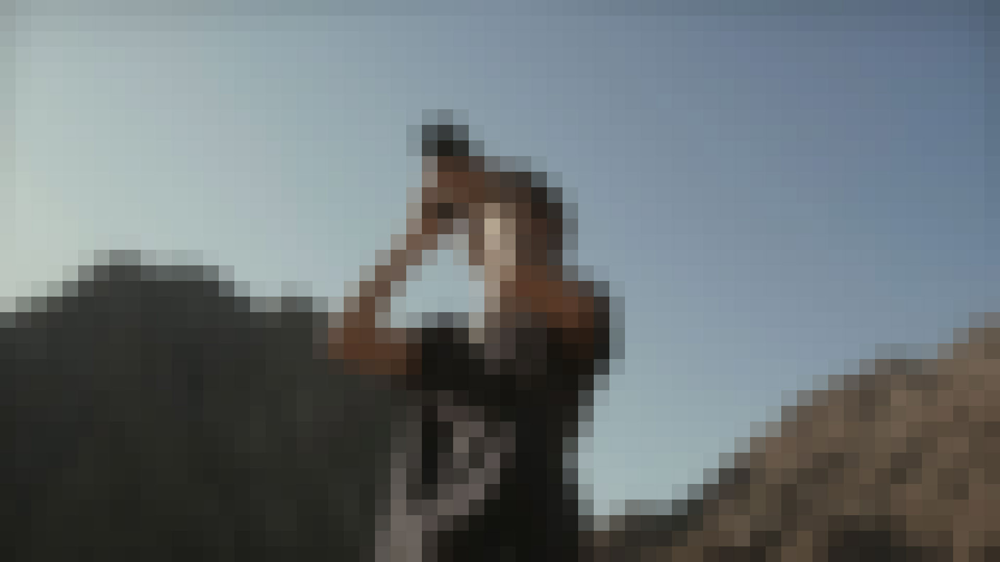
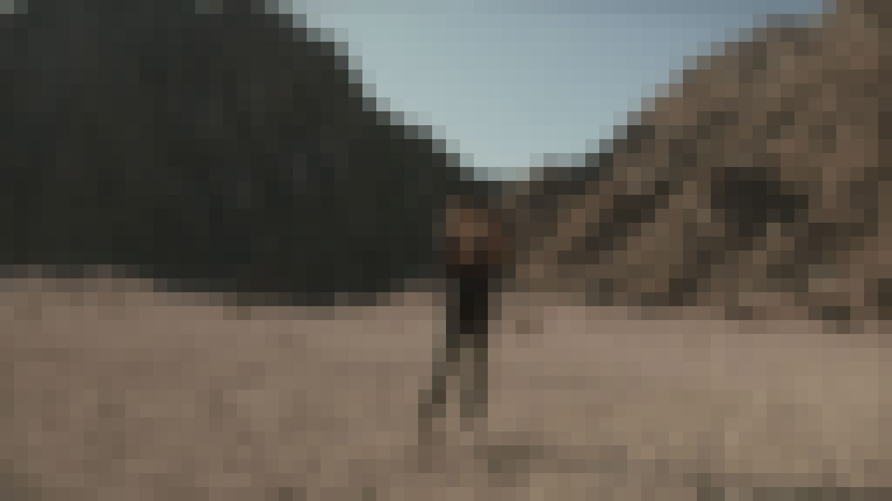

Role
Lead Designer · Information Architect · UX/UI Designer
Platform
Figma · Custom WordPress Architecture · Modular Page Templates · ADA/WCAG 2.0 AA · Mobile-First Responsive
Duration
Full Agency Engagement at Whoa
Visit Central Oregon was not suffering from a lack of product. The region had scenic beauty, outdoor access, food and drink, events, trails, and small towns. The issue was colder than that. People were interested, but the site was not structured around how that interest appeared. Demand was there. Curiosity was there. The architecture was not catching it.

The Problem
The map was not the territory.
Two research streams pointed to the same structural failure. The survey data showed the region was desirable but under-understood — Central Oregon scored 81.8% for scenic beauty and 76.3% for outdoor recreation. The problem was not persuasion. It was access.
Keyword research explained the mechanism. Across 20,000+ keyword combinations, travelers consistently searched in a City × Activity pattern. They were not beginning with "Central Oregon." They were beginning with intent: hiking in Bend, restaurants in Sunriver, camping near Sisters, trails near Terrebonne. That pattern changed the shape of the entire product. Navigation could no longer be organized around stakeholder categories. It had to become an intent resolver.

The Decision
Bend was the door, not the destination.
Bend dominated more than 60% of the region's non-brand search landscape. That created a real strategic tension. Bury Bend and the site would fight user behavior. Over-prioritize Bend and the other 11 cities would remain peripheral, limiting the regional economic mission the platform was built to serve.
Activity-first navigation solved the problem. A visitor searching for hiking could land in an experience that included Bend, Sisters, Terrebonne, and surrounding areas without forcing them to understand the region first. Bend remained visible because user demand required it. But it stopped acting as a ceiling. High-traffic destinations no longer competed with smaller cities — they amplified them. The region became a connected system rather than a collection of isolated pages.
In destination marketing, structure is the brand. Discoverability is the product.
The Architecture
Search became the structure.
Once City × Activity became the organizing primitive, the scale of the system became clear. Twelve cities multiplied across activity categories created 195 unique combinations. Those pages could not be designed as one-off editorial layouts — they needed a content architecture that could scale without becoming generic.
The system was built around six modular templates: Foundation, City, Activity, Business Listing, Itinerary, and Event. Each template had a distinct job, but all followed the same behavioral pattern: meet the visitor's intent immediately, confirm they are in the right place, then provide natural paths into deeper exploration. The taxonomy mapped 16 activity categories, 12 cities, and 717 category and subcategory combinations drawn from Travel Oregon's classification system. ADA compliance and WCAG 2.0 AA were built into the structure from the beginning — for a public destination platform, access is part of the product promise.
Outcomes
Seven hundred pages. One scalable system.
The architecture transformed a 12-city content estate that had been organizing itself around internal stakeholder categories into a discovery engine built around how travelers actually think. The platform's scalability was structural — new content could be added without inventing new design patterns, local businesses could be surfaced in meaningful context, and regional stakeholders could see how their city fit into the whole.
716K
Monthly travel-intent searches the platform was built to capture
195
Unique City × Activity combinations in the scalable template system
700+
Audited pages restructured into six reusable templates
12
Cities connected into a single regional discovery network
Reflection
The most important design decision on this project was also the least visible: replacing the organization's mental model with the traveler's mental model. The region had a way it wanted to present itself. The data showed a different way that travelers were already thinking about it.
City × Activity was the bridge between those two realities. It let the platform honor the region's complexity — 12 cities, 16 activity categories, hundreds of businesses and itineraries — while making that complexity feel simple to a traveler who just wanted to know where to go hiking this weekend.